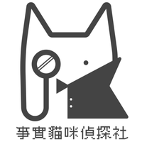

一個免費的 Chrome 小工具，幫你看穿新聞裡「哪句是事實、哪句只是意見」
先花一分鐘搞懂這隻貓在幫你做什麼事。
「真假 Meow 一下」（英文名 FactCat）是一個裝在 Chrome 上的免費擴充功能。看到一篇可疑的新聞，按一下貓咪，它就用 AI 幫你把整篇文章拆開來分析。
它的分析分成兩個層次：
不用登入就能用。分析網域、事實、觀點、中國用語四個基本面向。
需要 API Key。針對國防安全、公共衛生、經濟貿易做深度檢視，並用外部來源輔助查證。
| 步驟 | 在做什麼 |
|---|---|
| ① 拆解訊息 | 把文章切開，分出事實、觀點，並看網域與用語特徵 |
| ② 查證來源內容 | 驗證那些「事實」到底站不站得住腳 |
| ③ 檢驗推論 | 就算前提是真的，推出來的結論合理嗎？ |
| ④ 判定可信度 | 綜合以上給出整體評量 |
由七位清大、陽交大、成大的理工科學生組成的「事實貓咪偵探社」開發，指導老師劉彥伯。合作與支持單位包括 台灣數位外交協會（TDDA）、台灣事實查核中心、中華文化總會、台灣網路資訊中心（TWNIC）、台灣資訊環境研究中心（IORG）。公益專案，完全免費。
先講清楚，免得期待落空。
設定頁面自己寫得很清楚：「分析結果是模型提供的閱讀提示，不等同已完成事實查核」。它給你的是整理好的線索，最後那一刀還是你自己下。
標成「查無依據」不代表就是假的，標成「事實」也不保證 100% 正確。報告是切入點，不是最終答案。
Chrome 擴充功能只能裝在電腦版瀏覽器上，手機版 Chrome 不支援。
5 個步驟，大約 2 分鐘。
請務必用 Google Chrome。如果你平常用 Safari，先打開 Chrome 再繼續。
最快的方法：在網址列打上這個官方短網址，按 Enter，它會自動把你送到商店頁：
▲ 輸入 factcat.xyz/extension 即可
商店頁上「提供者」要寫 ai-fact-checking。名字很像但開發者不同的，不要裝。
▲ 商店頁面示意圖：按右邊的藍色按鈕
▲ 權限確認視窗示意圖
合理。要分析文章當然得讀得到內容，而且官方註明是「僅在用戶觸發時讀取授權頁面」—— 你不按貓咪，它不會偷看。詳見第 11 節。
右上角會冒出小視窗告訴你安裝成功。接著做下一步（釘選），使用會方便非常多。
不做也能用，但做了每次只要按一下。強烈建議做。
它在網址列右邊，長得像一塊拼圖。
▲ 點右邊的圖釘，把貓咪固定在工具列
▲ 成功！
很多人只知道按圖示。其實它有四個入口，挑你順手的用。
點工具列上的貓咪圖示，跳出小面板 → 按分析。最直覺，新手用這個。
在瀏覽器右側開一條長長的面板，可以一邊看文章、一邊看報告。長文章推薦用這個。
在網頁上按滑鼠右鍵，選單裡會有查核的選項。
手不離鍵盤，最快。見下方。
| 快速鍵 | 功能 |
|---|---|
| Alt + Shift + S | 開啟／關閉側邊欄 |
| Alt + Shift + A | 分析當前頁面 |
看到可疑文章，直接按 Alt+Shift+A，連滑鼠都不用動。
你在設定頁面選的「分析方式」，會同時套用到側邊欄、快顯視窗、右鍵選單、快速鍵。改一次就好，不用每個地方各設一次。
這一節最重要。設定頁面決定了它「用什麼方式」幫你分析。
兩種方法：
⒜ 點貓咪圖示 → 面板裡的設定按鈕。
⒝ 在貓咪圖示上按滑鼠右鍵 → 選「選項」。
打開後你會看到標題「🔍 真假 Meow 一下設定」，底下分成三大區塊。
這是整個設定頁的核心。它有三個選項，不是兩個：
此設定會套用於側邊欄、擴充功能快顯視窗、右鍵選單與鍵盤快速鍵。之後可隨時更改，不必登出帳號。
▲ 設定頁「分析方式」區塊（依實際介面用語重繪）
| 🔄 自動選擇 | 🏠 本地分析 | 🌐 網路輔助分析 | |
|---|---|---|---|
| 白話說 | 有金鑰就走雲端，沒金鑰就用本機 | 永遠用本機，就算你有金鑰 | 永遠走雲端 |
| 要登入嗎 | 看情況 | 不用 | 要 |
| 要 API Key 嗎 | 不一定 | 不用 | 要 |
| 文章送出去嗎 | 看情況 | 不會，留在你電腦 | 會送到分析伺服器 |
| 能做什麼 | 依當下模式而定 | 辨識論據、觀點、摘要 | 外部來源查證、媒體網域資訊、進階分析 |
| 不能做什麼 | — | 不查外部來源、不判定主張真偽 | — |
| 誰適合 | 大部分人（預設值） | 最在意隱私、或不想申請金鑰 | 要完整查核報告 |
什麼都別改，維持預設的「自動選擇」就好。你沒設金鑰時它自動用本地模式；哪天你設了金鑰，它自己就升級成網路輔助分析。
設定頁面自己講明了：本地分析「不會查詢外部來源或判定主張真偽」。也就是說，它只能幫你把句子分成「這句是論據 / 這句是觀點」，不會告訴你那句話到底是真是假。想要真的「查核」，得用網路輔助分析。
它用的是「Chrome 內建模型」，這是瀏覽器的新功能，需要較新版本的 Chrome，第一次使用時可能要先下載模型檔案，對電腦硬體也有基本要求。跑不動的話先到 chrome://settings/help 更新 Chrome。內建模型官方目前以英文、日文、西班牙文、德文、法文為主，繁中品質會因 Chrome 版本與裝置而異，適合作為初步閱讀參考。
很多人一進設定頁看到「登入」就卡住了。其實你不一定要登入。
本地分析不需登入。只有儲存個人 API Key、使用網路輔助分析或帳號與留言功能時才需要登入。
目前未登入；仍可使用本地分析。
▲ 未登入時的樣子
除此之外，不登入也能正常用本地分析。登入之後，這一區會變成顯示你的頭像、名字、Email，以及一顆「登出」按鈕。
這一區標題就寫著「選填」—— 不填也能用本地分析。要用進階功能才需要。
不填 Key 也能使用本地分析。若要使用外部來源輔助查證、媒體網域資訊與網路進階分析，請先登入，再至 Google AI Studio 建立個人 Gemini API Key。
API Key 會以加密格式儲存至帳號資料，並在網路輔助分析時由服務解密使用；選擇本地分析時不會使用它。
▲ 未登入時，兩顆按鈕是灰色不能按的 —— 這是正常的，先去上面登入就好
如果你直接貼上金鑰卻按不了「儲存」，不是壞掉 —— 是還沒登入。請先回到上面的「🔐 Google 帳號」區塊按「登入 Google」，兩顆按鈕就會亮起來。
沒登入的話金鑰存不進去。
設定頁面上那個連結會帶你到 aistudio.google.com/apikey。登入後按「Create API key」。
什麼是 API 金鑰？可以想成「一把讓程式代你去使用 Google AI 的鑰匙」。因為這是免費公益專案，團隊沒辦法幫所有人付 AI 費用，所以請你用自己的鑰匙。
會產生一串像 AIzaSy…… 的英數字，整串複製起來。
不要貼到 LINE 群組、不要截圖分享。任何拿到它的人都能用你的額度。不小心外流的話，回 AI Studio 把那把刪掉（Delete）再產生一把新的就好。
欄位預設是密碼形式（顯示成圓點），旁邊的 👁️ 按鈕可以切換顯示／隱藏，方便你檢查有沒有貼錯。
這顆按鈕是用來驗證金鑰是否有效的。存完就按一下，比等到分析失敗才發現金鑰打錯好得多。
設定完成後，畫面上方的狀態列會更新，「自動選擇」模式也會自動改用網路輔助分析。
Google Gemini API 有免費方案，一般個人查文章的用量通常在免費額度內。但若你的 Google 帳號有綁定付費專案或用量很大，仍可能產生費用。這是 Google 的計費規則，與這個擴充功能無關。
設定頁面最下方會列出快速鍵，就是第 5 節提到的 Alt+Shift+S（側邊欄）和 Alt+Shift+A（分析當前頁面）。
到網址列輸入 chrome://extensions/shortcuts，可以自訂成你順手的組合（例如跟其他軟體衝突時）。
設定看完了，來實際做一遍。
要停在文章本身的頁面，不是新聞網站的首頁或列表頁。它分析的是「你現在看的這一頁」。
▲ 快顯視窗示意圖（實際版面可能略有不同）
按 Alt+Shift+S 開側邊欄，就能一邊捲文章、一邊對照報告，不用一直開開關關。
貓咪偵探會依序做：①瀏覽文章 → ②啟動查核 → ③初步分析 → ④深入驗證 → ⑤產出報告。文章越長、模式越深入，等越久，通常幾十秒到一兩分鐘。
重新整理頁面（F5）再試、換一篇試試、或先切成本地分析。
報告不是給你一個「真」或「假」就結束，它是把文章拆開讓你自己看清楚。
最核心的功能：把文章裡的每一個句子分類。
▲ 標示效果示意圖（實際配色以擴充功能畫面為準）
重點不是「紅色越多就是假新聞」。專欄、社論本來就有大量藍色（觀點），這很正常。真正該警覺的是：一篇自稱「新聞報導」的文章卻塞滿紅色和藍色 —— 那代表它在用意見冒充事實。
不用登入就看得到的四個面向：
| 面向 | 它告訴你什麼 |
|---|---|
| 網域 | 這篇文章的網站是什麼來頭 —— 有編輯台的正規媒體、個人部落格、內容農場，還是來路不明的新網站 |
| 事實 | 哪些句子是可以被查證的敘述 |
| 觀點 | 哪些句子是作者自己的看法、評論、猜測 |
| 中國用語 | 比對中華文化總會「兩岸差異用詞」資料庫，標出中國慣用詞 |
| 中國用語 | 台灣常用說法 |
|---|---|
| 質量 | 品質 |
| 視頻 | 影片 |
| 信息 | 資訊 |
| 激活 | 啟用 |
| 網絡 | 網路 |
| 軟件 / 硬件 | 軟體 / 硬體 |
可能只是從對岸媒體轉載、或作者習慣用語。但如果一篇宣稱是「台灣本地新聞」的文章通篇中國用語，就值得多想一下它真正的來源是哪裡。這是「線索」，不是「證據」。
設定了 API Key、走網路輔助分析時，才會啟動的深度檢視：
誇大軍事威脅、散播「打不贏」的失敗主義、編造軍事動態。
疫苗、藥品、食安的錯誤資訊，長輩群組最常見。
唱衰經濟、編造貿易數據、假投資訊息與詐騙廣告。
網路輔助分析還會提供外部來源輔助查證與媒體網域資訊，這是本地分析做不到的。
團隊特別鎖定的五種常見誤導性題材。認得它們，比任何工具都有用。
假冒政府機關、官員名義發布消息，例如假紓困、假公告、假官網。
自保：認明政府網址結尾是 .gov.tw。
誇大軍事威脅、散播失敗主義、編造軍事動態製造恐慌。
「某某東西會致癌」「醫生不敢說的秘密」。
自保：以衛福部、疾管署公告為準。
唱衰經濟、編造數據、假投資訊息。
自保：看到「保證獲利」直接關掉。
不是價值判斷，而是來源線索：這篇內容是否可能源自對岸的內容生產鏈。
因為這正是「認知作戰」最常下手的題材 —— 目標不一定是讓你相信某個具體謊言，而是讓你對政府、對專業機構通通失去信任。工具幫你標出來，你自己判斷。
遇到狀況先看這裡。
不用。設定頁面寫得很明白：「本地分析不需登入」。只有三種情況才需要登入 ——儲存個人 API Key、使用網路輔助分析、使用帳號與留言功能。裝完什麼都不設定，直接按分析就能用。
這是正常的，代表你還沒登入。狀態列會顯示「未登入：仍可使用本地分析；登入後才能儲存個人 API Key」。先到上面的「🔐 Google 帳號」按「登入 Google」，按鈕就會亮起來。
擴充功能本身完全免費，公益專案，開發者標示為「非交易商」。唯一可能產生費用的是你自己去 Google 申請的 Gemini API 金鑰（一般個人用量在免費額度內）。
不行。Chrome 擴充功能只支援電腦版瀏覽器。
Edge、Brave、Opera 等 Chromium 核心瀏覽器通常可以直接從 Chrome 商店安裝（Edge 第一次會問要不要允許其他商店的擴充功能，同意即可）。
Safari 不行，擴充功能格式不同。
依序試試看：
① 重新整理頁面（F5）再按一次。
② 確認你停在文章頁而不是首頁。
③ 換一篇文章試，確認是不是特定網站的問題。
④ 到設定頁換一種分析方式再試。
⑤ 用本地分析的話，確認 Chrome 是最新版（chrome://settings/help）。
⑥ 到 chrome://extensions 把它關掉再打開，或移除後重裝。
因為它本來就是設計成這樣。設定頁面明講：本地分析「不會查詢外部來源或判定主張真偽」。它只能幫你分類論據與觀點、做摘要，換來的是文章內容完全不離開你的電腦。想要真正的查核就要用網路輔助分析。
依官方說明不會。權限是「目前分頁權限：僅在用戶觸發時讀取授權頁面」——你主動按下分析的那一刻，它才會讀取那一頁。
不是。意思是「在能查到的範圍內找不到支持這句話的資料」。可能消息太新、可能資料在 AI 查不到的地方、也可能真的是編的。這是提醒你「這句要自己再查一下」。
不能，也不該。設定頁面自己就寫了：「分析結果是模型提供的閱讀提示，不等同已完成事實查核」。把它當成一位勤勞但偶爾出錯的助理。
在貓咪圖示上按右鍵 → 「從 Chrome 中移除」。或到 chrome://extensions 找到它按「移除」。隨時可以裝回來。
非常適合。它最大的價值不在「幫你判斷真假」，而在把「事實」和「觀點」的差別視覺化。看幾篇之後，人會自然培養出「這句是他說的還是有查證的？」的直覺 —— 那才是帶得走的能力。
開發團隊信箱：ai.fact.checking@gmail.com；官網 factcat.xyz；也可以直接填回饋問卷。
裝任何擴充功能之前，都該花一分鐘看這個。
| 權限 | 官方說明 | 白話翻譯 |
|---|---|---|
| 目前分頁權限 | 僅在用戶觸發時讀取授權頁面 | 你按了分析，它才讀這一頁 |
| Google 身分驗證 | 用於登入與基本帳號資料 | 只有你選擇登入時才用到 |
| 連線 api.factcat.xyz | 偵探社分析服務 | 網路輔助分析時，把文章送去分析 |
設定頁面的原文說明：「新聞正文與分析結果不會送至分析伺服器；帳號驗證與留言功能仍可能連線。」
不論用哪個工具，不要在網路銀行、健保、公司內部系統等含敏感個資的頁面上執行分析。查核工具是給公開新聞文章用的。
看完文字還是不確定？直接看官方影片最快。
團隊有開放使用者回饋問卷（factcat.xyz/feedback）。這是免費公益專案，你的意見是他們改進的主要依據。
它幫你蒐集線索、整理證物、標出可疑之處。但「這篇到底可不可信」的判決，永遠是你自己下的。
不要因為它標綠色就照單全收，也不要因為它標紅色就直接罵人造謠。報告是討論的起點，不是終點。
誰寫的？哪個媒體？有沒有署名記者？網址對不對？
真有這件事，其他媒體應該也會報。只有一家在講就要小心。
問自己：「我是因為它是真的才轉，還是因為它讓我很生氣才轉？」
| 單位 | 用途 |
|---|---|
| 台灣事實查核中心 | 人工查核報告，可搜尋熱門謠言 |
| Cofacts 真的假的 | LINE 機器人，把可疑訊息貼給它查 |
| MyGoPen 麥擱騙 | 專門破解長輩群組謠言 |
| IORG 台灣資訊環境研究中心 | 資訊操弄研究，本工具的判讀架構參考來源 |